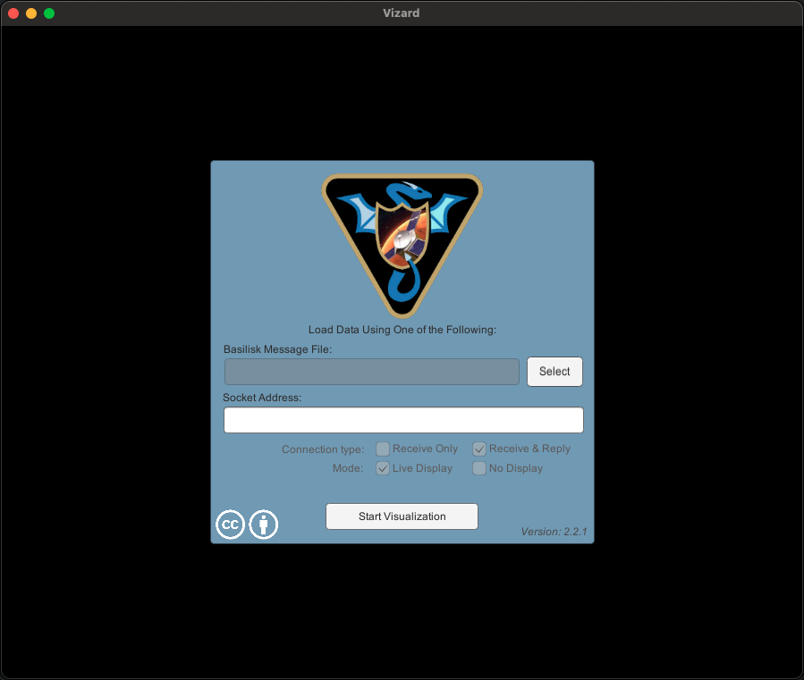
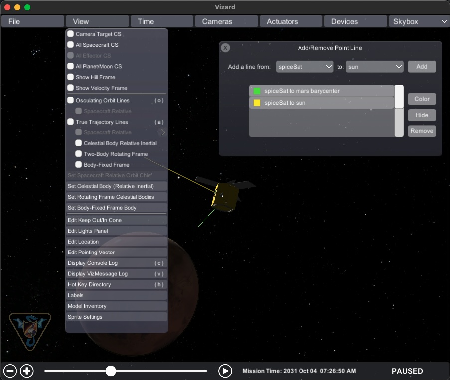
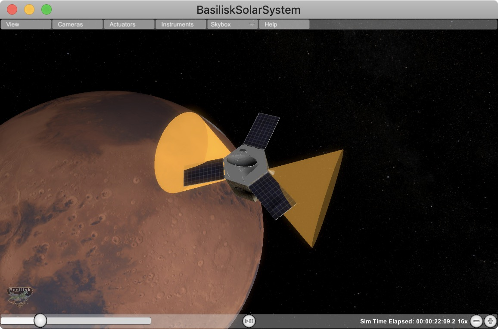
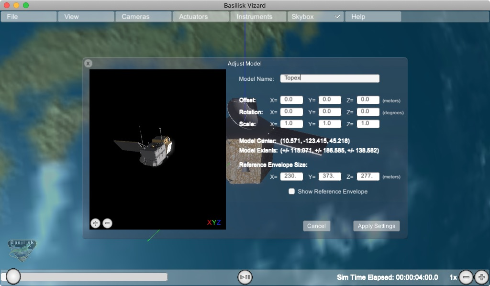

User Guide

Startup Panel
When starting up the Vizard software a panel is presented where the user can select which simulation to visualize. To play back a previously recorded BSK simulation press the Select button and navigate to the binary BSK recording file. After a file has been selected press the Start Visualization button.
{kind=link}
To live stream data from a running Basilisk simulation to Vizard, refer to the Live Communication with Vizard page.
View Modes
To engage with the visualization, the view point can be rotated and the user can zoom in and out. There are three view modes available:
Spacecraft-Centric View Mode (default): Here the spacecraft is drawn 1:1 while showing other celestial objects about it. When rotating the center of the spacecraft is the center of rotation. The spacecraft trajectory is not shown in this view. You can zoom in and out locally, but if you zoom out too far then the view mode switched to a planet-centric view mode.
Planet-Centric View Mode: Here a planet-wide view is presented. When rotating the view point this is about with the center of the planet as the center of rotation. The spacecraft trajectory is shown. The spacecraft is drawn at an exaggerated size so it is visible as a 3D object in this view. To return to a spacecraft-centric view mode double click on the spacecraft. If you zoom out far enough then the mode switches to a heliocentric view.
Heliocentric View Mode: Here a solar system wide view is shown. The planets are drawn enlarged to make them visible, and the planet trajectories are shown as well. If the spacecraft is orbiting a planet it is not visible in this view. If the spacecraft is on a heliocentric trajectory it is shown, also enlarged, in this view. Double clicking on a planet returns the user to a planet-centric view.
Space Vehicle States
The following sections describe the basic user interface elements of Vizard. Some settings can be set via a Basilisk script as described in the BSK Scripting Settings.
Basic Position and Orientation
Vizard is able to show the position and orientation of the spacecraft being simulated. If one or more planets are being modeled, then the spacecraft is show relative to the nearest planet.
Reaction Wheel States
If Reaction Wheels or RWs are modeled, then a RW panel can be opened
from within the Actuator menu bar item. Here the RW wheel speeds and
motor torques are shown.

Thruster States
If thrusters are being simulated then a range of visualizations can be
enables within the Actuator menu item. The options include to open
a Thruster Panel which shows the thruster firings as bar charts. The
thruster HUD uses a particle engine to illustrate if a thruster is
firing. Here the length and density of the particles is related to the
strength and duty cycle of the thruster. The thruster geometry option
draws small cones where the thrusters are modeled to be. This is
useful when debugging that a thruster configuration is being properly
modeled. Finally, the thruster normals option illustrates the thrust
axes being modeled.

View Menu Item
The View menu tab contains a range of Vizard options.
Coordinate Frames
A range of coordinate frames can be toggled on or off, including Camera Target CS, All Spacecraft CS, All Effector CS, All Planet/Moon CS, Hill Frame and Velocity Frame.

Orbit Lines
Both Osculating Orbit Lines and True Trajectory Lines can be shown in a variety of frames as described below. Example scenarios highlight different orbit line view settings.
Osculating Orbit Lines
The osculating orbit is the instantaneous Keplerian orbit disregarding perturbations. These lines can be shown in the following modes:
Celestial Body Relative Inertial(default). The relative celestial body is the parent by default, but can be changed through theSet Celestial Body (Relative Inertial)menu item.Spacecraft Relative. This mode is available in scenarios with multiple spacecraft. The relative orbit chief is selected based on the camera target, but can be changed manually through theSet Spacecraft Relative Orbit Chiefmenu item.
True Trajectory Lines
The true trajectory lines can be shown in the following modes:
Un-corrected Inertial (default). Inertial trajectories shown with respect to the solar system origin.
Celestial Body Relative Inertial. The relative celestial body is the parent by default, but can be changed through theSet Celestial Body (Relative Inertial)menu item. This view mode is highlighted in scenarioOrbitManeuver as shown below.

Spacecraft Relative. This mode is available in scenarios with multiple spacecraft. The relative orbit chief is selected based on the camera target, but can be changed manually through theSet Spacecraft Relative Orbit Chiefmenu item. These can be expressed in the Hill frame, velocity frame, or inertial frame of the chief. This view mode is highlighted in scenarioDataToViz as shown below.

Two-Body Rotating Frame. In scenarios with two celestial bodies, the primary is selected to be the larger of the two, per 3-body problem convention. In scenarios with more than two celestial bodies, the bodies must be manually selected using through theSet Rotating Frame Celestial Bodiesmenu item. This view mode is highlighted in scenarioHaloOrbit as shown below.

Body-Fixed Frame. The primary celestial body is default, but can be changed through theSet Body-Fixed Frame Bodymenu item. This view mode is highlighted in scenarioAsteroidArrival as shown below.

Edit Pointing Vector
This allows a line to be drawn from the spacecraft aimed at another celestial body such as the sun, a planet, etc. The spacecraft location is referred to as “Inertial”. The purpose of these lines is to have a quick visual reference in what direction another body is located. The lines can be hidden or removed as needed. Some celestial bodies come with default colors such as yellow for sun heading, or red for Mars heading, etc. However, each line color can be customized as needed.
{kind=link}
Edit Keep Out/In Cone
This feature allows for a cone to be added relative to the spacecraft which indicates if a cone about a particular body-fixed axis intersects with a celestial object. For example, this can be used to add a cone to validate that the sensor axis doesn’t get too close to the sun (keep out cone), or if the solar panel normal axis stays within some cone to the sun (keep in cone). If the cone in/out condition is not triggered, then the cone is opaque. If the in/out condition is triggered, then the cone becomes solid.
{kind=link}
Edit Location
Here you can control what ground or satellite locations are shown, as well as toggle if the location boresight vector should be shown, or/and the location coverage cone. These locations can also be scripted in python. However, this panel allows for locations to be added or edited on the fly.
Display VizMessage Log
This opens up a panel which displays all the raw protobuffer message states. You can downselect what type of messages to how with toggles on the left side. The messages are updated in realtime as the simulation progresses. Note, if a message is sent only once on start-up, it is only shown on the first simulation frame. This panel is useful when debugging protobuffer communication features.
Adjust GUI Scale
This brings up a panel where a global GUI scale factor can be set. This is useful increase or decrease, the Vizard font, panel and GUI element sizes. The Vizard default values switch automatically with the screen resolution. If a specific value is set in this panel than this over-rides the auto-setting.
Model Inventory Panel
If you want to see to the Vizard space object model inventory panel, then select View/Model Inventory as illustrated in the
following image:

Hot-Key Directory
The key h will open up a help panel showing all the hot-keys that are available. This includes a
camera-centric flashlight model with L, or ways to engage constant camera rates, or stopping all
camera rates with s, etc.

Labels
This allows you to turn on labels for spacecraft, planets, even actuators such as thrusters etc.

Model Inventory
Brings up a panel to edit and modify the 3D CAD models that are used by a spacecraft or a planet.
{kind=link}
Camera Menu Item
The Camera menu item allows for custom camera views to be created into the visualization. The first item called Changed Main Camera Target brings up a list of simulation objects that can be made the focus of the simulation camera window. This makes it easy to switch between an Earth-centric and a spacecraft centric simulation point of view.
Note that the Camera menu list contains 2 default camera options that can be turned on. Selecting either camera
1 or camera 2 will open a stand-alone camera view as shown below. Finally, if more camera views are required,
these can be added with the Add Camera menu option. Within a camera panel the user can
select from which object the camera is
simulated, and where this camera is pointing. Below the camera is selected to point camera along a body fixed vector.

In this second illustration the camera is chosen to point toward another simulation object such as the Earth. Here the user can select to point the camera at the target (nadir), along the velocity direction (along-track) or orbit-normal,.

If you press the snap shot icon on the lower right of the camera panel, then the camera view is captured and stored as a PNG image within the user’s home directory.
Import a Custom Shape Model
When Vizard starts up it represents the spacecraft using a default CAD model called bsk-Sat. This default spacecraft model can be replaced with with a custom CAD model in an .obj or .glb file format, or by using a built-in shape primitive. Go to the File menu and select Import Model:
{kind=link}
Next, select the file that is to be imported into Vizard.
{kind=link}
The next panel allows the CAD model import to be customized. The user can modify the origin offset,
the CAD orientation and the CAD scaling. The latter is useful to convert the CAD model into meters
used by Vizard. The model center and model extrema information is provided as a convenient. A
bounding box can also be draw as a convenient to make sure this is correctly configured. Note that
if a model is to be applied for each simulation instance, then see how createCustomModel() can be
configured to script this OBJ import process as illustrated in BSK Scripting Settings.

At this point a panel appears that allows you select the object for which you want to apply a new
shape, and what shape you want to apply. When ready, press Apply Models to Selected Objects to
apply the custom space object shape. Note that instead of an .obj or .glb file a custom shape can also be selected such as a sphere, cylinder or cube.

Built-In CAD Models of Celestial Bodies
While custom CAD shapes can be imported to display celestial bodies and spacecraft shapes,
Vizard has several built-in models that are automatically applied if the body has the
corresponding name. For the gravitational bodies, Module: vizInterface uses by default
the string planetName in the GravBodyData() structure as the gravity body label. If
the optional string displayName is set, this this gravity body label over-rides the planetName
string. This is handy in that sometimes the gravity body might have an unintuitive Spice ID or name,
and the user wishes to label the planet with a more common name such as earth, mars, etc.
Further, or override the auto-shape selection and specify a specific shape, use the
modelDictionaryKey string to specify CAD model to be used. This allows the CAD keyword and the
planet label to be different.
This gravity body label is used in Vizard to select a default shape. For example, Vizard seeks
for the label earth (regardless of capitalization) and will find it in earth, earth_planet_data, etc.
The following table is the list of built-in Vizard celestial bodies.
Vizard Keyword |
Features |
Satellites |
|---|---|---|
Mercury |
||
Venus |
atmospheric shader |
|
Earth |
atmospheric shader |
moon |
Mars |
atmospheric shader |
Phobos, Deimos |
Jupiter |
||
Saturn |
||
Uranus |
||
Neptune |
||
Bennu |
||
Ryugu |
Advanced Options
File/Compress Messages Option
This option will compress the number of stored vizMessages from the current run. This feature is especially useful during multi-day live streaming simulation runs when the number of saved Module: vizInterface can grow too large for the app to continue running.
Selecting this option brings up a settings panel that allows the user to specify how many messages should be retained. For example, if the user opts to retain 1/2 stored messages, Vizard will delete every other message in the Module: vizInterface dictionary, reducing the Vizard memory footprint.
Warning
Compression can be applied when running the Vizard from a Module: vizInterface archive file or when live streaming. Please note that the compression cannot be reversed, but that the archive file, if in use, will not be changed.
Sprite Representation of Space Objects
Vizard is setup to show an attitude dependent 3D rendering of a spacecraft model by default. In a planet centric or helio-centric view the spacecraft is enlarged such that the orientation can still be determined. This is the default behavior if a single satellite is shown. However, if multiple satellites are shown then seeing enlarged 3D renderings can both be a large computation hit and confusing to the viewer. Thus, if 2 or more spacecraft are shown, and the view point is planet- or sun-centric, then Vizard defaults to showing the spacecraft locations as 2D sprites.
The default shape is a white circle. Using View/Sprite Settings opens a control panel to custumize the use
of sprites. Different shape primitives and colors can be selected for some or all the spacecraft and planets. Further,
toggles are provided to over-ride the default behavior and switch between a 3D rendering or 2D sprite representation.